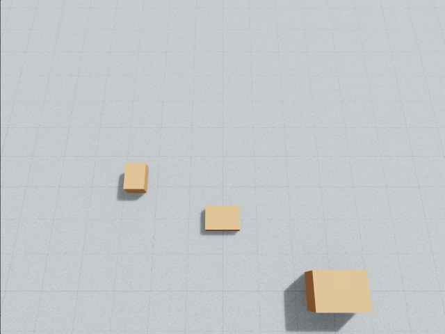
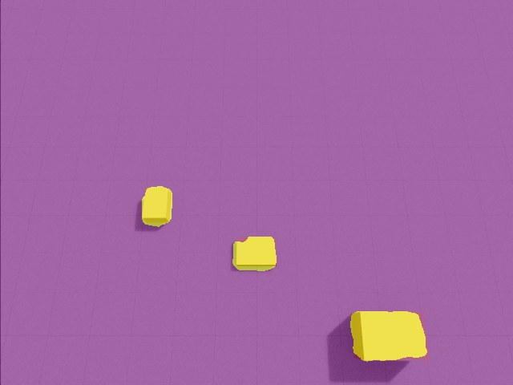

About
I live in Los Angeles. I’m a data scientist at the Keck School of Medicine of USC, where I work on NIH-funded studies of the brain, genes and the immune system. I also build AI products: I was the founding engineer of Apateu, a student-housing marketplace and AI search engine, and I built Moonlight, an iPhone app for parents of children with autism. I’m also building the autonomy software for an autonomous delivery drone: a learned pilot that flies around trees, poles and buildings. I grew up in China and studied statistics at Southeast University (东南大学) in Nanjing, then mathematics at Utrecht University and analytics at USC.
Most of my work is checking whether a result, a model or a machine is right enough to act on, and building the pipeline that makes it so.

Things I’m interested in
Statistics and data science
I was a statistician before I was an engineer, and it is still how I think about everything below: what would it take to convince me this result is real?
 Medical research at USCData scientist · Keck School of Medicine of USC, Division of Biostatistics · 2023 to presentThe computational analyst on five NIH-funded studies: air pollution and brain aging, childhood adversity and DNA methylation, immune signatures after trauma, a deep-learning model of adolescent brain structure, and hearing loss in children on chemotherapy.
MoreLess
Medical research at USCData scientist · Keck School of Medicine of USC, Division of Biostatistics · 2023 to presentThe computational analyst on five NIH-funded studies: air pollution and brain aging, childhood adversity and DNA methylation, immune signatures after trauma, a deep-learning model of adolescent brain structure, and hearing loss in children on chemotherapy.
MoreLess
The questions are big and human. Does traffic pollution age the brain? What does childhood adversity write into DNA? Can a scan predict a hormone? The data is enormous and noisy, so most of my job is building the pipeline that makes an answer trustworthy before anyone reads it.
My main project follows air pollution into the brain. Working with about 1,600 MRI scans from older women in the Women’s Health Initiative Memory Study, I created and maintain MRIreduce, an open-source R package on CRAN that turns raw brain images into structured features without a predefined atlas, building on my advisor’s Partition method. I then used high-dimensional causal mediation to ask which brain regions carry pollution’s effect on memory. I’m first author on the manuscript, now under revision.
- Harmonized eleven cohorts of blood samples from trauma and sepsis patients across three measurement platforms and found a 36-gene neutrophil signature that reproduced with 97.2% directional agreement (AAST 2026 abstract).
- Built a deep-learning pipeline with explainability built in that predicts adolescent hormone levels from brain structure in about 9,100 ABCD Study participants (OHBM 2026 abstract).
- Ran an epigenome-wide study of childhood maltreatment and DNA methylation: 453 young people, four timepoints, about 768,000 sites, kinship-adjusted mixed models on USC’s HPC cluster.
- Built and deployed PedsHEAR, a clinician-facing tool that estimates hearing-loss risk for children on cisplatin chemotherapy, around my advisor’s validated model.

AI engineering: building apps people use
I build apps on language models. In practice most of the work is deciding what the model is allowed to say and what the code has to verify.
 ApateuFounding engineer · with Danbi Jang · 2025 to September 2026A student-housing app. Students sublease to each other with a lease signed in the app, and an AI agent answers “a 2-bed near USC under $1,400 for the summer” with specific buildings and their current listed prices.
MoreLess
ApateuFounding engineer · with Danbi Jang · 2025 to September 2026A student-housing app. Students sublease to each other with a lease signed in the app, and an AI agent answers “a 2-bed near USC under $1,400 for the summer” with specific buildings and their current listed prices.
MoreLess


It started with a problem Danbi and I both had: we tried to sublease our own apartments and it was miserable. A group chat, no listing, no contract, no way to know if the stranger on the other end was real. So we built the app we wanted and launched it on the App Store in September 2025.
Under the search engine is an index I built: 353 operator-specific adapters that read prices straight from property managers’ own websites across 3,700+ buildings in five metros, converted to a price per bed, because that is how students rent. The agent is a tool-use loop on Claude’s API with 34 tools, and a grounding layer keeps an amenity only when the building’s own page states it. I owned the whole stack, SwiftUI, Node and MongoDB, and wrote most of the adapters by directing AI coding agents the way a lead runs a small team.
- 1,000+ registered students, doubled in six months.
- Ten campus Instagram accounts run by AI agents we built, about 6,000 followers, nothing spent on ads.
- A two-person team with no employees. Numbers as of August 2026.
 MoonlightAI engineer / full-stack software engineer · San Diego · 2026An iPhone app for parents of children with autism. A parent records an observation with a photo or a voice note, and the app turns weeks of records into charts a doctor can read: sleep, bowel health, therapy sessions and food, and which things tend to occur together.
MoreLess
MoonlightAI engineer / full-stack software engineer · San Diego · 2026An iPhone app for parents of children with autism. A parent records an observation with a photo or a voice note, and the app turns weeks of records into charts a doctor can read: sleep, bowel health, therapy sessions and food, and which things tend to occur together.
MoreLess


Parents of a child who may not have the words to say how they feel keep track of a great deal, and are then asked to recall weeks of it at a short appointment. Moonlight is one place to record structured daily observations across built-in and custom categories, and it looks for patterns across them over weeks.
The rule I held to was that the language model may suggest a pattern, and must report the times it did not hold, but every number in a report comes from a database counter, never from the model. The app gives no medical advice: if the model drafts a line that reads like a treatment change, code replaces it with a fixed instruction to keep recording and consult a doctor. Names are redacted before every prompt, and the whole app works in Chinese and English.
Since launch the app has changed in weekly rounds driven by the family. The latest reworked Insights: any date range now reads as sections a clinician would recognize, with sleep, bowel health on the Bristol scale, intervention sessions and nutrition, every chart computed from the records, and the whole report exports to a PDF for the next appointment.
I built it end to end: requirements gathered from parents with no technical background, a proposal they approved, weekly check-ins, one storage design reversed when their security checklist made a server necessary, and version one in production in August 2026 after a four-week build. SwiftUI, Swift Charts, Node, MongoDB, OpenAI and AWS.
Electrical engineering: putting AI on hardware
Everything above runs on a server or a phone. I want to learn what it takes for AI to work when it has motors, sensors and a battery, and a mistake has physical consequences.
 An autonomous delivery droneAI engineer · forward-deployed, for a client · summer 2026 to presentA drone that flies a one-kilogram package from A to B and back around trees, poles and buildings, reading a lidar and a camera together. A learned pilot does the flying; fixed safety rules it cannot override have the last word. So far it flies only in simulation: the aircraft is not built yet.
MoreLess
An autonomous delivery droneAI engineer · forward-deployed, for a client · summer 2026 to presentA drone that flies a one-kilogram package from A to B and back around trees, poles and buildings, reading a lidar and a camera together. A learned pilot does the flying; fixed safety rules it cannot override have the last word. So far it flies only in simulation: the aircraft is not built yet.
MoreLess
Live 3D model · drag to orbit, ⌘/Ctrl + scroll to zoom · drag sideways to orbit
- Camera depth grid, near to far
- Lidar returns
- Beams down and up
The mission
Fly a package from A to B around real obstacles, land at B, release it, and fly home the same way. That is the part a waypoint autopilot cannot do: it follows a line, and it cannot see a tree.
The design splits the work in three. ArduPilot on the Pixhawk is the vehicle: it keeps the aircraft stable, tracks the speed it is asked for, takes off, touches down and runs the failsafes. A learned pilot on the Raspberry Pi chooses the path and the speed, sending four commands ten times a second: forward, sideways and vertical speed, and turn rate. Between them sits a guardian, plain rules rather than anything learned, which the pilot cannot override. If the Pi crashes or goes quiet, the autopilot brakes, climbs and flies home.
What it sees
A camera tells you what things are and sees far in daylight; a lidar measures where they are, in any light. The pilot gets both. The lidar is a Unitree L2 hung upside down under the nose, so it sees from straight down to 6° above the horizon, all around, out to about 15 m on dark surfaces. Above that it is blind, which is why the camera sits on a boom in front of it, looking ahead and up.
The camera is the Raspberry Pi AI Camera, whose Sony IMX500 sensor runs a small neural network on the chip itself. The plan is for it to turn each image into distances with ZipDepth, an open depth model, which I converted and squeezed into 7.5 of the chip’s 8 MB; its speed on the real camera is the next measurement. The pilot reads a coarse 12 × 16 grid of those distances, which looks the same in simulation as on the aircraft. Raw pixels would not.
Speed follows what it can see. Like a careful human pilot, it flies only as fast as it can stop within the distance the lidar has confirmed clear: 6 m/s at most, slower near obstacles. Anything the sensors cannot see clearly counts as blocked, never as clear.
How it learns
Training runs in a simulator I built in PyTorch rather than in a game engine. The obstacle courses are simple solids, so every lidar ray, camera distance and collision can be computed exactly, for thousands of aircraft at once on one GPU: about 10,000 simulated steps a second, or 17 minutes of flight every second. The courses run from open fields through posts, trees and buildings to courtyards and dead-end alleys, with ceilings low enough that the pilot has to go around obstacles, not over them.
The pilot is one small network trained with PPO, a reinforcement-learning method, and it has to beat a hand-written pilot with the same sensors and the same guardian before it goes near an aircraft. It is not there yet. After two hours of training on a rented GPU it reached B on 225 of 240 courses it had never seen, with one collision, and it was faster wherever both arrived; the hand-written pilot still arrives more often, 235 of 240. The learned pilot also found two ways to crash that the guardian’s rules had missed and the hand-written pilot never tried. After a redesign, 9,840 simulated flights, including seven pilots written to misbehave, ended without a crash.
Before any of this, our first flight code carried a 2.7 km route on three simulated airframes, and a fault lab killed a motor, jammed the GPS and faked a dying battery to see what the autopilot would do.
Later: choosing where to land
For the first demo, B is an easy spot chosen in advance and the autopilot simply lands there. Later, the same sensors will choose a spot on unmarked ground that is firm, level, clear of people and big enough, or decline and fly back. For that we tested pretrained segmentation models instead of training our own and chose SafeLand, a SegFormer model trained on aerial images that labels 23 classes, including road, grass, water, obstacles and people. At 47 million parameters it is far too big for the camera chip, so it runs on the Pi’s processor, where it currently takes about 12 seconds per image. That was measured on an underpowered supply, so the landing work waits until it is measured again.


- Road
- Obstacle
- Person
- Water
- Holybro X650 V2 airframe with 15-inch propellers; a one-kilogram package released by a servo latch, only after a supervised check on the ground.
- One Unitree L2 lidar rather than two Livox Mid-360S: hung upside down it also sees the ground straight below, and it costs $419 instead of $1,893.
- The Pi and the AI Camera run on the bench; the airframe and the lidar are not bought or built yet, and nothing has flown.
Education
- 2023M.S. in Analytics, University of Southern California, Los Angeles
- 2021M.S. in Mathematics, Utrecht University, the Netherlands
- 2020B.S. in Statistics, Southeast University (东南大学), Nanjing
Selected writing and software
- 2026Traffic-related air pollution, brain structure and cognitive aging in older women (WHIMS-AIR).
- 2026MRIreduce: ROI-based transformation of neuroimages into high-dimensional data frames.
- 2026Hormone-sensitive gray matter during early adolescence: deep learning and biasing confounds.
- 2026Same storm, different dataset: reproducibility of leukocyte transcriptomic changes after blunt trauma.
- 2025HDCIT: a high-dimensional causal inference test for single exposure, multiple mediators and single outcome.